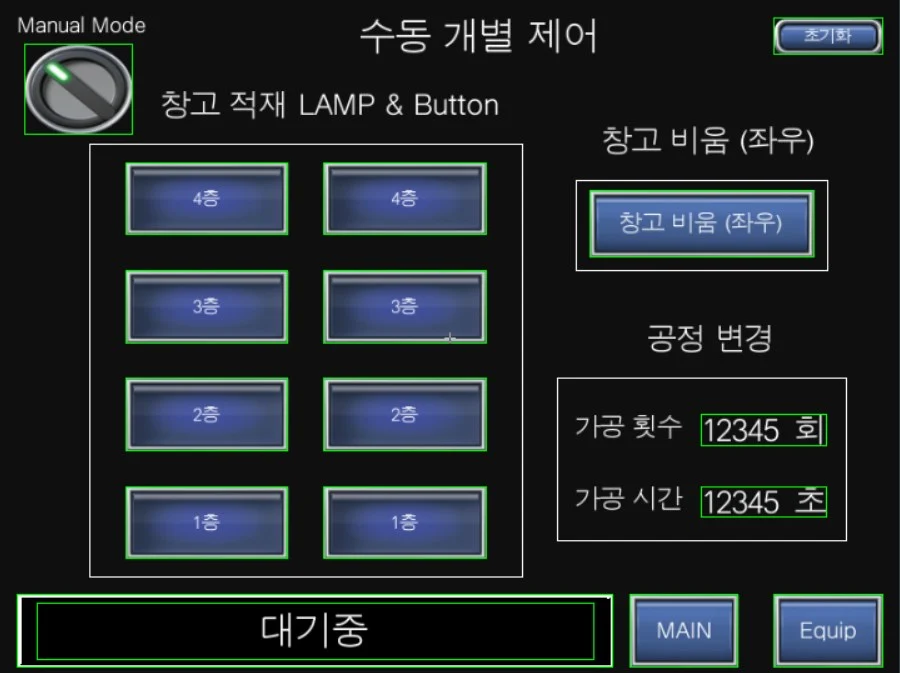

← 전체 프로젝트
MPS 트레이너 · 전체 동작 영상에서 추출 HMI · 층별 수동 제어 화면
06 / SEQUENCE CONTROL / TRAINING
PLC Mini Project
교육 프로젝트MPS 트레이너로 구성한 창고 적재·비우기와 수동 제어 실습.
공개 영상 링크 미등록

PROJECT OVERVIEW
어떤 시스템인가요?
공급·분배·판별·저장 과정을 연결하고, 창고 층별 적재와 수동 제어를 구성한 교육용 미니 프로젝트입니다.
MY ROLEPLC 시퀀스·HMI 제어 공동 구현
MY IMPLEMENTATION
- 층별 적재·비우기와 수동 개별 제어 시퀀스 공동 구현
- HMI 장비 제어·설비 점검·위치 티칭 화면 구성
- 적재 순서 제한과 서보 초기 가동 문제 확인
SYSTEM FLOW
데이터가 동작으로 이어지는 구조
- 01HMI
- 02PLC / Ladder
- 03센서·서보
- 04적재 / 배출
TEAM / EXTERNAL
2인 공동 교육 프로젝트입니다. Mitsubishi PLC와 MPS 트레이너를 사용했으며 세부 모듈별 개인 분담은 별도 확정하지 않았습니다.
원본 GX Works·HMI 파일과 발표 자료 보유
ENGINEERING NOTE
문제를 마주했을 때
문제와 판단
서보 리셋 직후 동작이 간헐적으로 실패했습니다. 발표 자료에 기록한 대로 리셋 후 대기 시간을 두어 준비 이후 동작하도록 변경했습니다.
결과와 남은 한계
HMI와 설비를 연결한 전체 동작 영상을 남겼습니다.
교육 장비에서 수행한 실습입니다. 산업 현장 적용이나 생산성 개선 수치로 확대하지 않습니다.